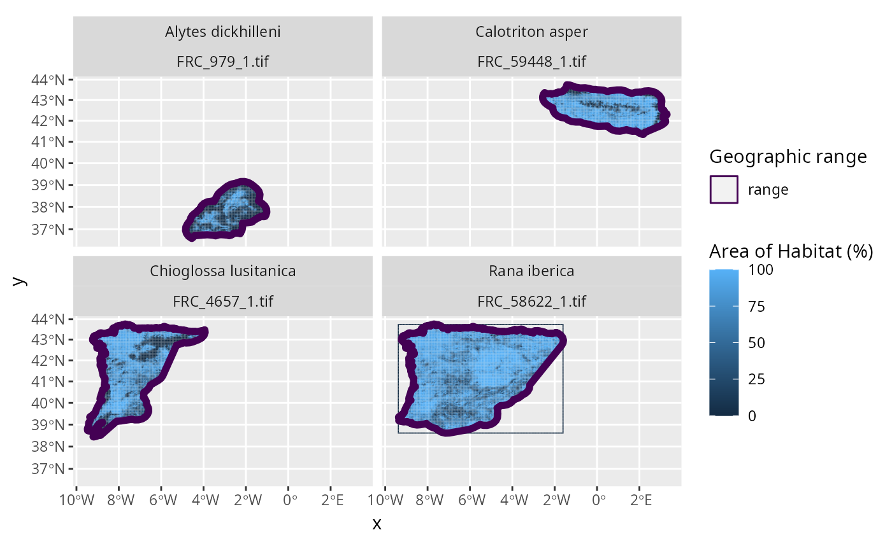

Create fractional coverage data to describe species' Area of Habitat (AOH) across large spatial scales. Briefly, this function creates Area of Habitat data for each seasonal distribution of each species, overlays the Area of Habitat data with a spatial grid, computes the proportion of suitable habitat available within each grid cell (for each species separately), and stores the results as raster files on disk. To reduce data storage requirements, Area of Habitat data are automatically deleted during processing. Please note that these procedures are designed for terrestrial species, and will not apply to marine or freshwater species.
create_spp_frc_data(
x,
output_dir,
res,
elevation_data = NULL,
habitat_data = NULL,
crosswalk_data = NULL,
cache_dir = tempdir(),
habitat_version = "latest",
elevation_version = "latest",
force = FALSE,
n_threads = 1,
cache_limit = 1000,
engine = "terra",
verbose = TRUE
)sf::sf() Spatial data delineating species' geographic ranges,
habitat preferences, and elevational limits. This object should
be created using the create_spp_info_data() function.
character Folder path to save raster (GeoTIFF) files
containing the fractional coverage data.
numeric Resolution for computing fractional coverage.
Note that the argument to res must be a factor of the
the resolution of the underlying Area of Habitat data.
For example, a value of 5000 would be a valid argument
if the underlying data had a resolution of 100 m.
terra::rast() Raster data delineating the
worldwide elevation data (e.g., Robinson et al. 2014).
Defaults to NULL such that data
are automatically obtained (using get_global_elevation_data()).
If the data are obtained automatically, then a preprocessed version
of the habitat data will be used to reduce processing time.
terra::rast() Raster data indicating the
presence of different habitat classes across world
(e.g., Jung et al. 2020a,b; Lumbierres 2021; Lumbierres et al. 2021).
Each grid cell should contain an integer value that specifies which
habitat class is present within the cell
(based on the argument to crosswalk_data).
Defaults to NULL such that data are automatically obtained (using
get_lumb_cgls_habitat_data()).
data.frame() Table containing data that indicate
which grid cell values in the argument to habitat_data correspond to
which IUCN habitat classification codes. The argument should contain
a code column that specifies a set of IUCN habitat classification
codes (see iucn_habitat_data(), and a value column that specifies
different values in the argument to habitat_data.
Defaults to NULL such that the crosswalk for the default habitat
data are used (i.e., crosswalk_lumb_cgls_data()).
character Folder path for downloading and caching data.
By default, a temporary directory is used (i.e., tempdir()).
To avoid downloading the same data multiple times, it is strongly
recommended to specify a persistent storage location (see Examples below).
character Version of the
habitat dataset that should be used. See documentation for the
the version parameter in the get_lumb_cgls_habitat_data() function
for further details.
This parameter is only used if habitat data are obtained
automatically (i.e., the argument to habitat_data is NULL).
Defaults to "latest" such that the most recent version of the dataset is
used if data need to be obtained.
character Version of the
elevation dataset that should be used. See documentation for the
the version parameter in the get_global_elevation_data() function
for further details.
This parameter is only used if elevation data are obtained
automatically (i.e., the argument to elevation_data is NULL).
Defaults to "latest" such that the most recent version of the dataset is
used if data need to be obtained.
logical Should the data be downloaded even if the
the data are already available?
Defaults to FALSE.
integer Number of computational threads to use
for data processing.
To reduce run time, it is strongly recommended to set this
parameter based on available resources (see Examples section below).
Note that parallel processing is only used for processing the
habitat classification and elevation data.
As such, this parameter will have no influence when using preprocessed
datasets.
Defaults to 1.
integer Amount of memory (Mb) for caching
when processing spatial data with the
Geospatial Data Abstraction Library (GDAL).
This parameter is only used when using the "gdal" engine.
If possible, it is recommended to set this as parameter to
at 5000 (assuming there is at least 8Gb memory available
on the system).
Defaults to 1000.
character Value indicating the name of the software
to use for data processing.
Available options include "terra", "gdal", or "grass"
(see below for details).
Defaults to "terra".
logical Should progress be displayed while processing data?
Defaults to TRUE.
A sf::st_sf() object. This object is an updated version
of the argument to x, and contains additional columns describing the
output raster files. Specifically, it contains the following columns:
numeric species' taxon identifier on the IUCN Red List.
character species name.
numeric seasonal distribution code.
character IUCN Red List threat category.
character all habitat classification
codes that contain suitable habitat for the species.
If a given species has multiple suitable habitat classes,
then these are denoted using a pipe-delimited format.
For example, if the habitat classes denoted with the codes
"1.5" and "1.9" were considered suitable for a given species, then
these codes would be indicated as "1.5|1.9".
character habitat
codes used to create the species' Area of Habitat data.
Since the argument to habitat_data may not contain habitat
classes for all suitable habitats for a given species
(e.g., the default dataset does not contain subterranean cave systems),
this column contains the subset of the habitat codes listed in the
"full_habitat_code" column that were used for processing.
numeric lower elevation threshold used to create
the species' Area of Habitat data.
numeric upper elevation threshold used to create
the species' Area of Habitat data.
numeric upper elevation threshold used to create
the species' Area of Habitat data.
numeric value describing the spatial extent of
the output raster file.
numeric value describing the spatial extent of
the output raster file.
numeric value describing the spatial extent of
the output raster file.
numeric value describing the spatial extent of
the output raster file.
character file paths for the output raster files
(see Output file format section for details).
The fractional coverage data generated using the following procedures. After these data are generated, they stored as files on disk (see Output file format section for details).
Global elevation and habitat classification are imported, (if needed,, see get_global_elevation_data() and get_lumb_cgls_habitat_data(), for details)., If these data are not available in the cache directory, (i.e. argument to cache_dir), then they are automatically downloaded, to the cache directory., Note that if elevation and habitat data are supplied, (i.e. as arguments to elevation_data and habitat_data), then, the user-supplied datasets are used to generate Area of Habitat data., ,
The Area of Habitat data are then generated for each seasonal, distribution of each species. For a given species' distribution,, the data are generated by, (i) cropping the habitat classification and elevation data to the spatial, extent of the species' seasonal distribution;, (ii) converting the habitat classification data to a binary layer, denoting suitable habitat for the species' distribution, (using the habitat affiliation data for the species' distribution);, (iii) creating a mask based on the species' elevational limits, and the elevation data, and then using the mask to set values, in the binary layer to zero if they are outside of the species', limits;, (iv) creating a mask by rasterizing the species' seasonal, distribution, and then using the mask to set values in the binary, layer to missing (NA) values if they are outside the species', distribution;, (v) saving the binary layer as the Area of Habitat data, for the species' distribution., Note that species' distributions that already have Area of Habitat data, available in the output directory are skipped, (unless the argument to force is TRUE).
A terra::rast() object is created to define
a standardized grid for calculating fractional coverage data.
Specifically, the grid is created by aggregating the
habitat data (per argument to habitat_data) to the specified
resolution (per argument to res).
The Area of Habitat data are used to compute fractional coverage data. Specifically, for each seasonal distribution of each species, the Area of Habitat data are overlaid with the standardized grid to calculate the proportion of each grid cell that contains suitable habitat.
Post-processing routines are used to prepare the results. These routines involve updating the collated species data to include file names and spatial metadata for the fractional coverage data.
Fractional coverage data are stored in a separate raster (GeoTIFF) file for
each seasonal distribution of each species. Each raster file is assigned a
file name based on a prefix and a combination of the species' taxon
identifier
(per id_no/SISID column in x) and the identifier for the seasonal
distribution (per seasonality in x)
(i.e., file names are named according to FRC_{$id_no}_${seasonality}.tif).
For a given raster file, grid cell values denote the proportion of suitable
habitat located within each cell.
For example, a value of 0 corresponds to 0% fractional coverage,
0.5 to 50% fractional coverage, 1 to 100% fractional coverage.
Missing (NA) values correspond to
grid cells that are located entirely outside of the species' distribution.
This function can use different software engines for data processing
(specified via argument to engine). Although each engine produces the
same results, some engines are more computationally efficient than others.
The default "terra" engine uses the terra package for processing.
Although this engine is easy to install and fast for small datasets, it does
not scale well for larger datasets. It is generally recommended to use
the "gdal" engine to perform data processing with the
Geospatial Data Abstraction Library (GDAL)
can be used for data processing. The "grass" engine can also be
used to perform data processing with the
Geographic Resources Analysis Support System (GRASS).
Note that the "grass" engine requires both the GDAL and GRASS software
to be installed.
For instructions on installing dependencies for these engines,
please see the README file.
Brooks TM, Pimm SL, Akçakaya HR, Buchanan GM, Butchart SHM, Foden W, Hilton-Taylor C, Hoffmann M, Jenkins CN, Joppa L, Li BV, Menon V, Ocampo-Peñuela N, Rondinini C (2019) Measuring terrestrial Area of Habitat (AOH) and its Utility for the IUCN Red List. Trends in Ecology & Evolution, 34:977--986. Available at https://doi.org/10.1016/j.tree.2019.06.009.
Jung M, Dahal PR, Butchart SHM, Donald PF, De Lamo X, Lesiv M, Kapos V, Rondinini C, and Visconti P (2020a) A global map of terrestrial habitat types. Scientific Data, 7:1--8. Available at https://doi.org/10.1038/s41597-020-00599-8.
Jung M, Dahal PR, Butchart SHM, Donald PF, De Lamo X, Lesiv M, Kapos V, Rondinini C, and Visconti P (2020b) A global map of terrestrial habitat types (insert version) [Data set]. Zenodo Digital Repository. Available at https://doi.org/10.5281/zenodo.4058819.
Lumbierres, M (2021). Map of habitat classes (Level 1) from the IUCN Habitat. Zenodo Digital Repository. Available at https://doi.org/10.5281/zenodo.5146072.
Lumbierres M, Dahal PR, Di Marco M, Butchart SHM, Donald PF, and Rondinini C (2021) Translating habitat class to land cover to map area of habitat of terrestrial vertebrates. Conservation Biology, In press, DOI:10.1111/cobi.13851 Available at https://doi.org/10.1111/cobi.13851.
Robinson N, Regetz J, and Guralnick RP (2014) EarthEnv-DEM90: A nearly- global, void-free, multi-scale smoothed, 90m digital elevation model from fused ASTER and SRTM data. ISPRS Journal of Photogrammetry and Remote Sensing, 87:57--67. Available at https://doi.org/10.1016/j.isprsjprs.2013.11.002
This function is useful for creating fractional coverage data when
species' Area of Habitat data are already not available.
If you have previously generated species' Area of Habitat data,
you can use the calc_spp_frc_data() to use these Area of Habitat data
to calculate the fractional coverage data directly.
# \dontrun{
# find file path for example range data following IUCN Red List data format
## N.B., the range data were not obtained from the IUCN Red List,
## and were instead based on data from GBIF (https://www.gbif.org/)
path <- system.file("extdata", "EXAMPLE_SPECIES.zip", package = "aoh")
# import data
spp_range_data <- read_spp_range_data(path)
# specify settings for data processing
output_dir <- tempdir() # folder to save coverage data
cache_dir <- rappdirs::user_data_dir("aoh") # persistent storage location
n_threads <- parallel::detectCores() - 1 # speed up analysis
# create cache directory if needed
if (!file.exists(cache_dir)) {
dir.create(cache_dir, showWarnings = FALSE, recursive = TRUE)
}
# create species' information data
spp_info_data <- create_spp_info_data(
x = spp_range_data,
cache_dir = cache_dir
)
#> ℹ initializing
#> ✔ initializing [3s]
#>
#> ℹ cleaning species range data
#> ✔ cleaning species range data [3.2s]
#>
#> ℹ importing species summary data
#> ✔ importing species summary data [344ms]
#>
#> ℹ importing species habitat data
#> ✔ importing species habitat data [360ms]
#>
#> ℹ collating species data
#> ✔ collating species data [209ms]
#>
#> ℹ post-processing results
#> ✔ post-processing results [13ms]
#>
#> ✔ finished
# create fractional coverage data
spp_frc_data <- create_spp_frc_data(
x = spp_info_data,
res = 5000,
output_dir = output_dir,
n_threads = n_threads,
cache_dir = cache_dir
)
#> ℹ initializing
#> ✔ initializing [4ms]
#>
#> ℹ importing global elevation data
#> ✔ importing global elevation data [13.3s]
#>
#> ℹ importing global habitat data
#> ! argument to "crosswalk_data" is missing the following 2 habitat classification codes: "7.1", "7.2"
#> ℹ importing global habitat data
#> ✔ importing global habitat data [13.3s]
#>
#> ℹ generating Area of Habitat data
#> skipping 4 species distributions already processed
#> ✔ generating Area of Habitat data [13ms]
#>
#> ℹ post-processing results
#> ✔ post-processing results [22ms]
#>
#> ✔ finished
# }
if (FALSE) { # interactive()
# \dontrun{
# preview data
print(spp_frc_data)
# }
}
# \dontrun{
# import fractional coverage data as a list of terra::rast() objects
spp_frc_rasters <- lapply(spp_frc_data$path, terra::rast)
# print list of rasters
print(spp_frc_rasters)
#> [[1]]
#> class : SpatRaster
#> dimensions : 53, 75, 1 (nrow, ncol, nlyr)
#> resolution : 5000, 5000 (x, y)
#> extent : -472531, -97531, 4362077, 4627077 (xmin, xmax, ymin, ymax)
#> coord. ref. : World_Behrmann
#> source : FRC_979_1.tif
#> name : lyr.1
#> min value : 0
#> max value : 0.9908
#>
#> [[2]]
#> class : SpatRaster
#> dimensions : 46, 115, 1 (nrow, ncol, nlyr)
#> resolution : 5000, 5000 (x, y)
#> extent : -252531, 322469, 4837077, 5067077 (xmin, xmax, ymin, ymax)
#> coord. ref. : World_Behrmann
#> source : FRC_59448_1.tif
#> name : lyr.1
#> min value : 0
#> max value : 1
#>
#> [[3]]
#> class : SpatRaster
#> dimensions : 104, 108, 1 (nrow, ncol, nlyr)
#> resolution : 5000, 5000 (x, y)
#> extent : -917531, -377531, 4547077, 5067077 (xmin, xmax, ymin, ymax)
#> coord. ref. : World_Behrmann
#> source : FRC_4657_1.tif
#> name : lyr.1
#> min value : 0
#> max value : 0.9972
#>
#> [[4]]
#> class : SpatRaster
#> dimensions : 100, 151, 1 (nrow, ncol, nlyr)
#> resolution : 5000, 5000 (x, y)
#> extent : -907531, -152531, 4567077, 5067077 (xmin, xmax, ymin, ymax)
#> coord. ref. : World_Behrmann
#> source : FRC_58622_1.tif
#> name : lyr.1
#> min value : 0
#> max value : 1
#>
# plot the data to visualize the range maps and fractional coverage data
plot_spp_frc_data(spp_frc_data)

# }